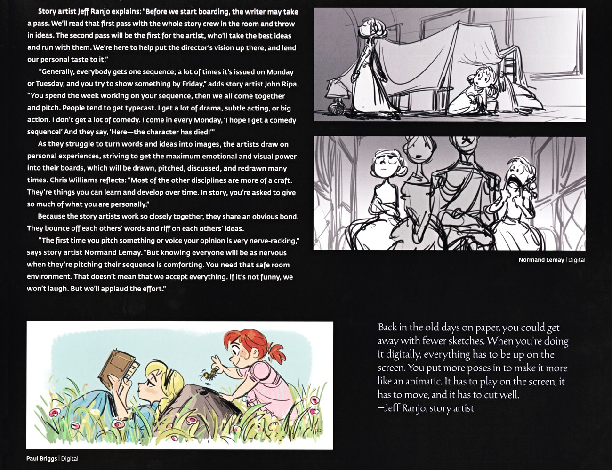
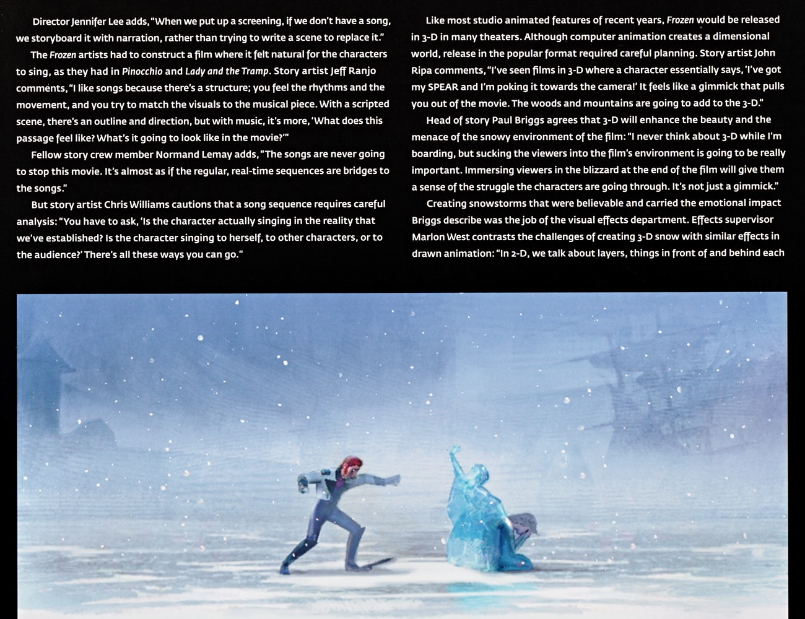
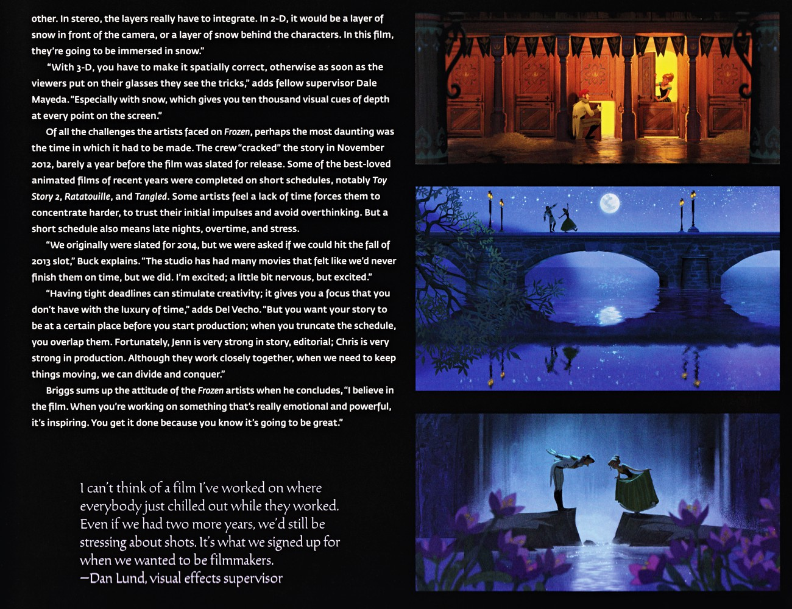
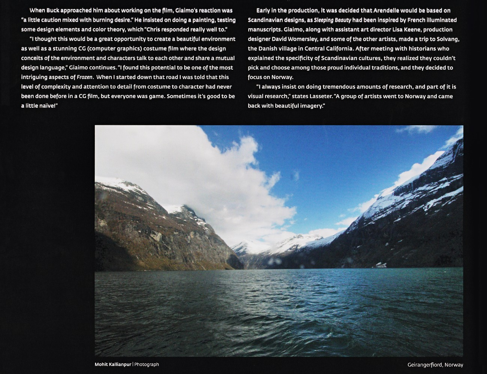
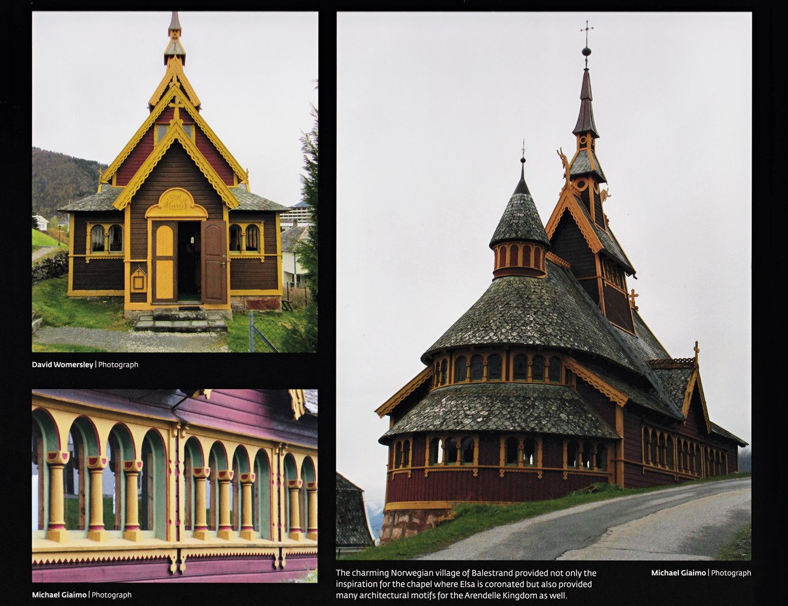
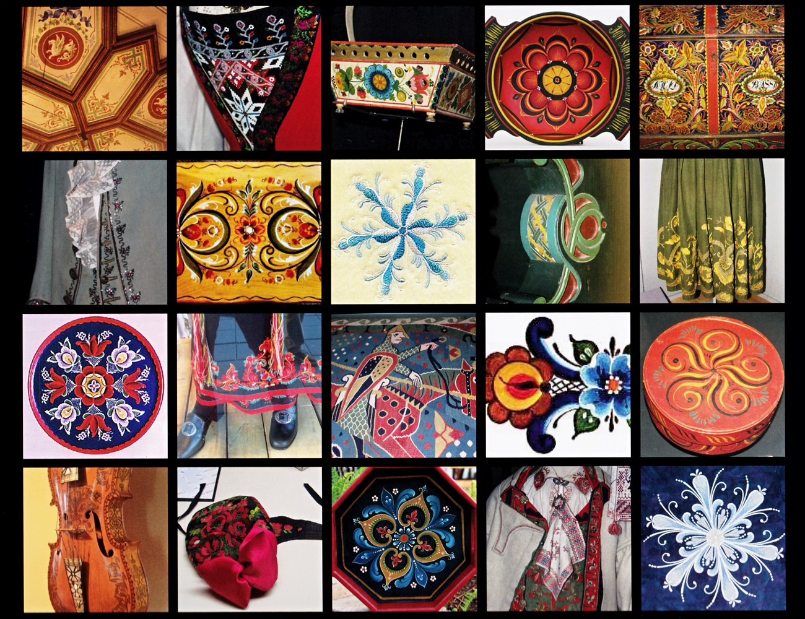
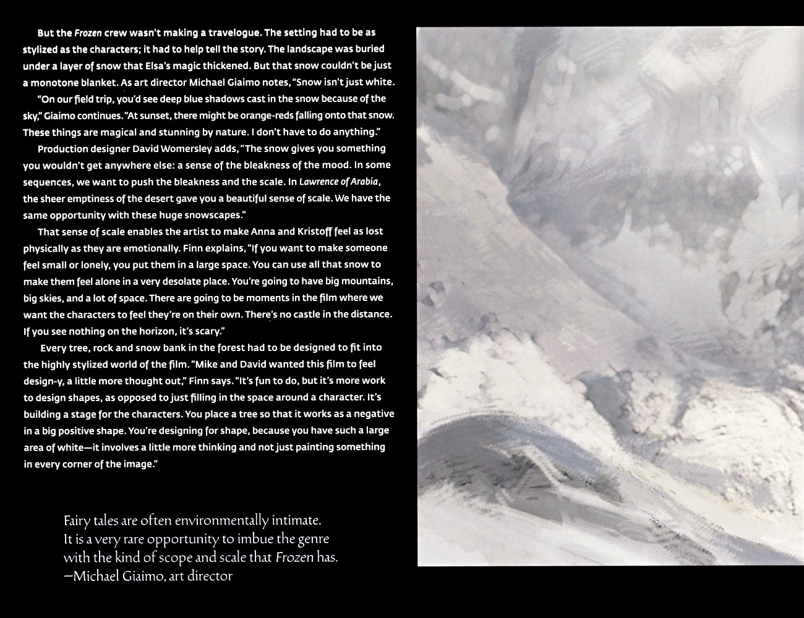
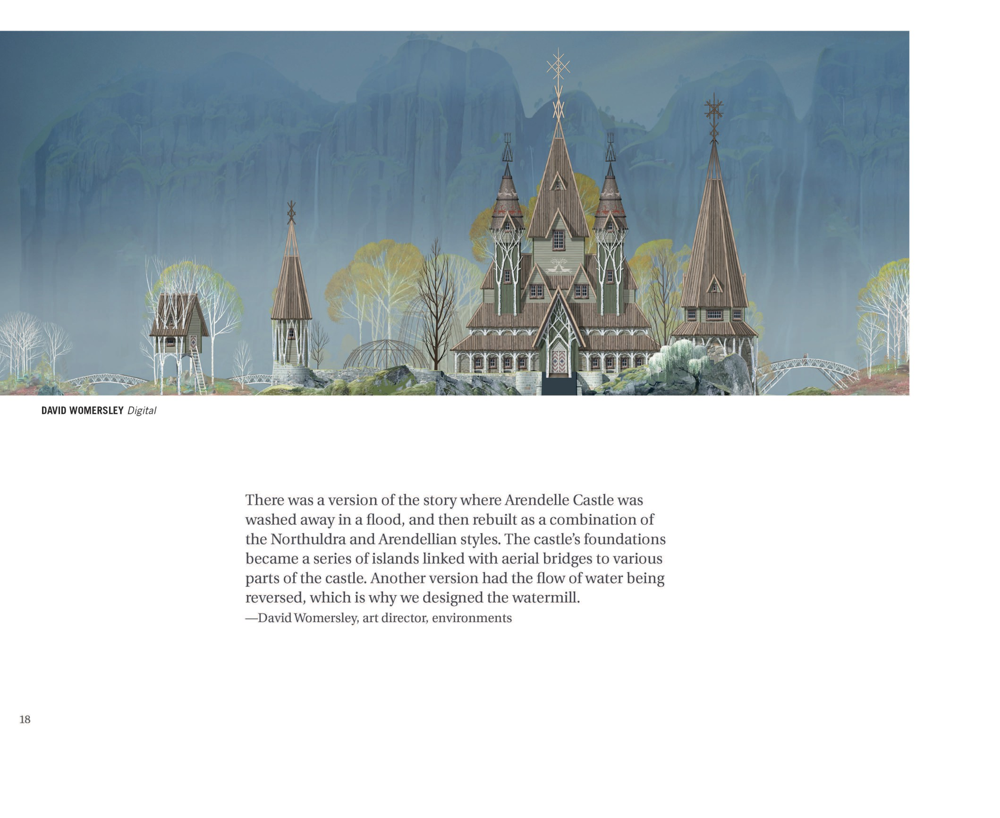

🎬 制作 · 设定集精选
幕后 · 设定集精选
项目史、故事工艺与美术方法的原书记录
F1·F2
主电影
中/英
双语
📜 姐妹设定的诞生

《雪之女王》改编史
1938年研究者 Mary Goodrich 将原作主题定为「因信仰而重生」；2000–2002年的多个草稿版本（藏于动画研究图书馆）舍弃巨魔与魔镜，甚至尝试过冰岛捕鲸设定。

姐妹设定的突破
Brittney Lee 郁金香纹饰下的关键转折：2008年 Buck 提案音乐版《雪之女王》；「女主角与反派是拥有共同过去的姐妹」——正是这一设定解锁了整个故事（制片人 Del Vecho）。
✏️ 故事工艺与分镜

故事艺术家的工作流程
本页记录分镜工作流：编剧先写一稿，全体故事组阅读并提想法，艺术家接手最佳创意；通常每人负责一个序列，周一/二领任务、周五 pitch。John Ripa 谈艺术家常被"定型"（他多接戏剧/大动作）。Chris Williams 强调故事最需投入个人真情。多位艺术家草图（Normand Lemay 帘中姐妹、王室全家福；（F1设定集原页）

歌曲结构、3-D 规划与雪景视效（上）
导演 Jennifer Lee 谈到没有成歌时先用旁白分镜替代；多位故事艺术家（Jeff Ranjo、Normand Lemay、Chris Williams）讨论歌曲赋予影片节奏结构、实时段落如同通往歌曲的桥，以及必须厘清"角色是在对谁歌唱"。关于 3-D，John Ripa 与故事主管 Paul Briggs 强调（F1设定集原页）

3-D 雪景、工期压力与三人浪漫夜景（下）
文字接续 p147：Marlon West 说明立体 3-D 中雪层必须真正整合，Dale Mayeda 强调空间正确否则戴镜即穿帮，尤其雪提供海量景深线索。随后谈及最艰巨的挑战是工期——团队 2012 年 11 月才"破解"故事，距 2013 年秋上映仅约一年；Buck、Del Vecho 谈到压缩档期带来的压力与"（F1设定集原页）
🎨 美术参考与采风

设计调研与斯堪的纳维亚影响
阐述《冰雪奇缘》以斯堪的纳维亚（最终聚焦挪威）为阿伦黛尔蓝本；Giaimo 强调环境与人物的"共同设计语言"，团队赴挪威 Solvang、Geirangerfjord 采风。附挪威峡湾实拍照片。（F1设定集原页）

挪威巴里斯川参考摄影
展示挪威巴里斯川村的教堂与木板教堂（stave church）照片，说明艾莎加冕小教堂及整个阿伦黛尔王国的建筑母题均源自此地。（F1设定集原页）

挪威民间艺术参考拼贴
挪威民间艺术参考照片拼贴：彩绘天花板、刺绣织物、雕花木箱、装饰盘、传统服饰、小提琴与花卉纹样，为后续 rosemaling 花纹提供素材。（F1设定集原页）

rosemaling 花纹体系
以雕刻木作、字母组合纹、rosemaling 镶板、木板教堂内部、民间画组成的参考网格，配 Womersley、Keene、Giaimo 三段关于「去挪威前后影片大不同」与图案化理念的引述。正文介绍 rosemaling（18世纪中叶东挪威的装饰画）被美术团队用于服装与布景；Giaimo 强调需统一色调、避免角色像「行（F1设定集原页）

荒野景观的设计哲学
本页为荒野景观的设计哲学：环境须与角色同样风格化并服务于叙事；雪非单调白——实地采风中天空在雪上投下深蓝影、日落时有橙红落下，本身已极美。Womersley 指出雪带来别处没有的"苍凉情绪"与尺度感（类比《阿拉伯的劳伦斯》的沙漠空旷）；Finn 称以巨大空间让安娜与克斯托夫感到身心迷失、孤独可怖。每棵树、石、雪堤都需为（F1设定集原页）
歌曲结构、3-D 规划与雪景视效（上）
导演 Jennifer Lee 谈到没有成歌时先用旁白分镜替代；多位故事艺术家（Jeff Ranjo、Normand Lemay、Chris Williams）讨论歌曲赋予影片节奏结构、实时段落如同通往歌曲的桥，以及必须厘清"角色是在对谁歌唱"。关于 3-D，John Ripa 与故事主管 Paul Briggs 强调（F1设定集原页）
🆕 F2 的技术与设计升级

Introduction（介绍，p8）
Introduction 核心：1) Frozen II 主旨是人物成长；2) 季节选秋季 = 象征成熟；3) Norway 是 Anna 的森林仙境，Iceland 是 Elsa 的神话之地；4) 色彩：暖橙+紫红（植被）vs 冷蓝/中性色（天空）；5) 设计语言：垂直拉长、不"歪斜"（wonky）、精致装饰；6) （F2设定集原页）

Arendelle Castle 早期版本
早期被弃用版本：1) 城堡被洪水冲毁后重建，融合 Northuldra+Arendelle 风格，地基成岛屿，空中桥连接；2) 另一个版本水倒流，因此设计风车。（F2设定集原页）
💡 图注说明
本页全部图版来自《The Art of Frozen》与《The Art of Frozen II》官方设定集原书扫描，图注经原书逐页笔记核对。
📌 本页要点
你正在阅读《制作》卷的「幕后 · 设定集精选」。本页由电影正典、官方设定集与官方小说综合梳理，可作为该主题的速查入口；右侧目录可快速跳转到本页各小节。